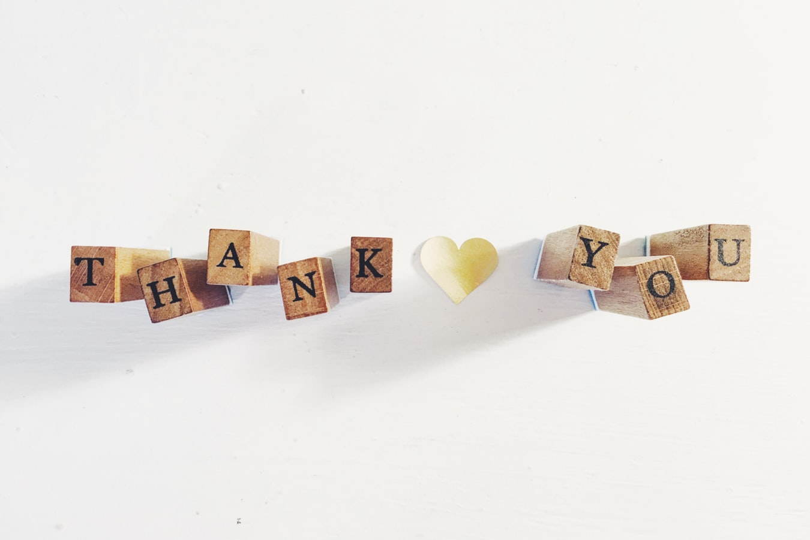

나의 진로
#내가 자라온 환경
#내 삶의 변화의 주범:책
#나의 진로 탐색
#미래의 나
#마치며
마치며
 여기까지 봐주셔서 정말 감사합니다!
이 활동을 하면서 코딩을 배운것만 아니라 진로를 다시 되돌아 보는 계기가 되었습니다.
다들 이런 활동을 한번 해보시길 바라고요.
저 처럼 과감하게 보충 야자를 끊고 어떤 활동을 해보고 싶다면 해보시길 추천합니다.
다시한번 감사합니다. 잘 보셧다면 아래의 설문조사 한번씩 해주세요♥
로드 중…